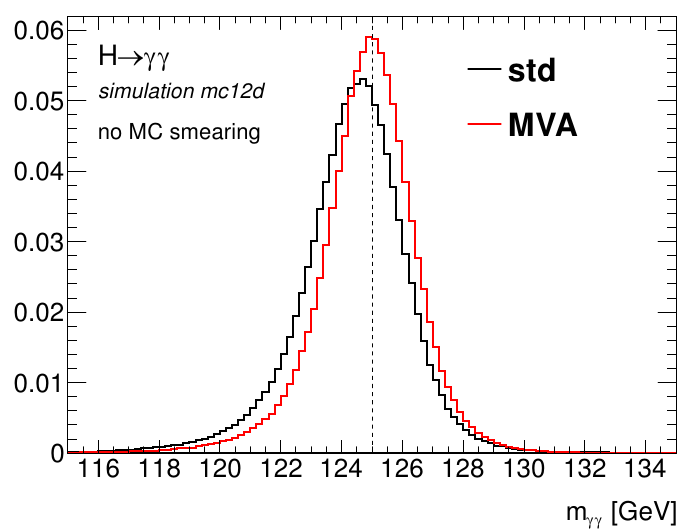

Performances
energy calibration, reconstruction, e/gamma coordinatorSince the beginning of my PhD, I have maintained and improved the Monte Carlo energy calibration of electrons and photons using machine learning.
I coordinated the e/gamma group in 2022-23 and several subgroups (calibration 2014-16 and reconstruction 2020-21).